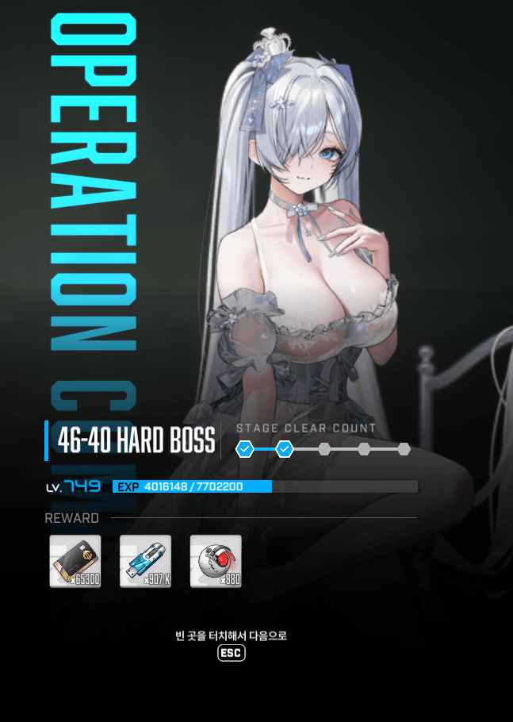
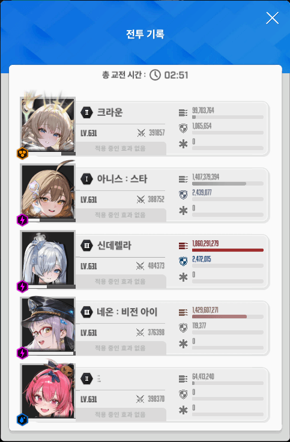
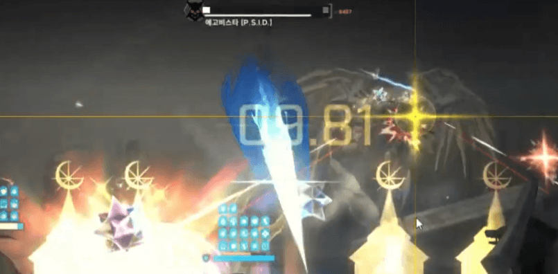
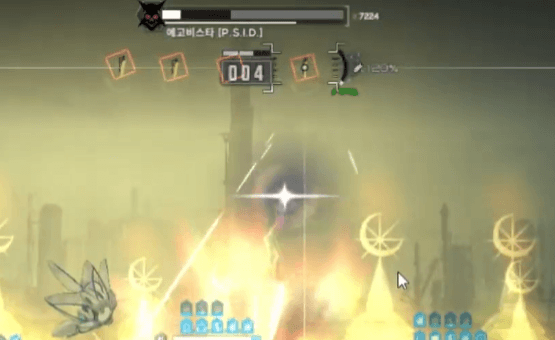

일단 저는 아니스 크라운 신데렐라 네온 메스트 조합을 채택했구요 배치 3번자리에 신데렐라를 둬서 디코이로 에고비스타 1인기들을 씹는게 포인트였삼
그리고 가장 중요한 포인트가 엄폐 안까이고 잘지켜서 55초쯤에 날리는 3단 참격까지 잘 유지해서 크라운 버스트 키기입니당
(55초 3단 참격 전에 엄폐 까이면 리트해야함)
보통은 갓 나온 네온보단 신데렐라가 더 잘키워져있고 저 또한 그렇기에 신데렐라 선버로 했구요 거기에 네온 초화력을 메스트에 맞추기도 힘들어서 메스트도 신데렐라 다 몰아줬어요
일단 들어가기에 앞서서 3스택 기준으로 나눠서 설명할건데 또 기존처럼 크크메 크메크처럼 정형화된 순서가 아니기에 미리 버스트 순서부터 설명하고 가자면
메크메-크메크-크메크or크크크-크메크로 굴렸습니다
메크메
두번째 크라운 버스트를 두번째 고드름 다 날아오는 거 보고 다 날아오고나서 써서 크라운 보호막 안까이고 5인 참격 버티기
다른 거는 크게 신경 X
어차피 신데렐라 디코이가 에고비스타 1인 참격들 다 막아줌

고드름은 사진에 이것 느린 횡 이동 이후에 발사함 쏘기 직전에 순간이동 할 때 타겟 누군지 뜸 이거 보고 단독 엄폐로 잘 피하기
크메크
개빠른 횡 이동 후 기절 포탄 날아오는 거 다 요격
고드름 엄폐 안까이게 잘 피하기
3번자리 신데렐라라서 1인기 푹찍할 때 크라운 보호막 없어도 디코이로 버팀 메스트 켜줘도 됨
족자저지 아니스 잡고 빠르게 하기

사진에 이게 기절 포탄 엄청 빠른 횡이동 이후에 발사함 맞으면 기절시간이 상당히 길고 어차피 화면에서 보스가 사라지기에 그냥 날아오기전에 편하게 요격
크메크 or 크크크
(3번째만 무조건 크라운 버스트!!!)
족자저지 후 버스트 키고 열심히 때리기
고드름 때 엄폐 안까이고 무빙 잘하기
난 그래서 처음이랑 마찬가지로 왼쪽오른쪽 무작위 이동하면서 고드름 뿌리는 거 그거 두번째 고드름 날아오고 버스트를 켰서요 이러면 크라운 보호막 까이는 억까 없더라구여
55초쯤에 3단 참격 날리기 땜에 진입 전에 엄폐 다 살아있고 버스트는 무조건 크라운 보호막 켜져있는 상태로 참격 전에 엄폐해야 살아남아요
(그래서 크크메 차례지만 크라운 버스트 크크크를 하거나 크메크 하는 이유가 3번재 크라운을 켜야해서)
마지막 크메크
처음 크라운 버스트 때는 기절 미사일만 잘 지우면 댐 어차피 개빨리 이동해서 딜탐 많이 없슴
메스트 킨 타이밍에 속성저지 열리는데 이때 아니스 잡고 탄수 잘 확인하고 패면서 원 잘재다가 저지하기(런쳐라 또 너무 재지말고 생각한거보다 빨리하는 거 추천)
속저 이후에 쓰러지는데 이때 개패기